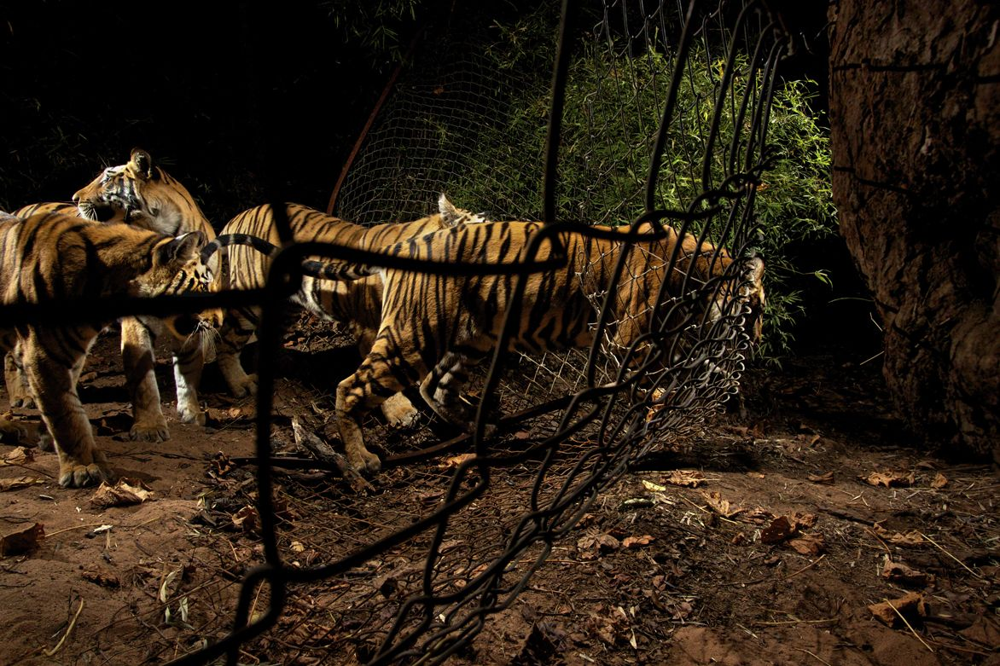

indian tiger
A tiger and her cubs leave India’s Bandhavgarh National Park in search of prey, which is scarce inside the reserve. Credit: Steve Winter/National Geographic PDF version Central India — The Maruti Gypsy 44 sped along a jungle track, jolting us out of our seats. We had signed up for a wolf safari, but the trip leader had another quarry in mind. The vehicle barrelled towards a pungent smell on a hillside — a fresh tiger kill.
The forest guide spoke to one of his colleagues in a different vehicle and then barked at our driver to rush towards a nearby meadow. A tigress and four cubs are at a watering hole just beyond our sights, he said.
A tiger and her cubs leave India’s Bandhavgarh National Park in search of prey, which is scarce inside the reserve. Credit: Steve Winter/National Geographic PDF version Central India — The Maruti Gypsy 44 sped along a jungle track, jolting us out of our seats. We had signed up for a wolf safari, but the trip leader had another quarry in mind. The vehicle barrelled towards a pungent smell on a hillside — a fresh tiger kill. The forest guide spoke to one of his colleagues in a different vehicle and then barked at our driver to rush towards a nearby meadow. A tigress and four cubs are at a watering hole just beyond our sights, he said. A full Moon rose, and revealed an ink-blue landscape. Handheld lights were banned, so visibility was at 3 metres. The phone rang, and the guide instructed the driver, who raced on a rollercoaster route back to the kill site. No tiger. We dashed back to the meadow, a second vehicle in hot pursuit. It felt ugly, like a hunt.
Two circuits later, the Moon was high over the meadow when we were beckoned once more back to the kill site. We raced there to find four Gypsys, the drivers using their headlights to sweep the hillside. Another vehicle banged into ours. Our guide cursed. Then silence, as the drivers shut off the engines. Tourists stood on seats, peering through telephoto lenses.
tiger image
A tiger and her cubs leave India’s Bandhavgarh National Park in search of prey, which is scarce inside the reserve.